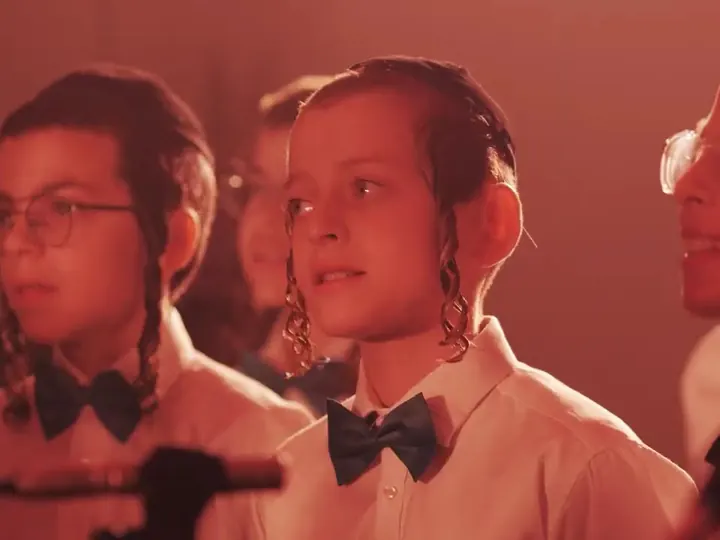
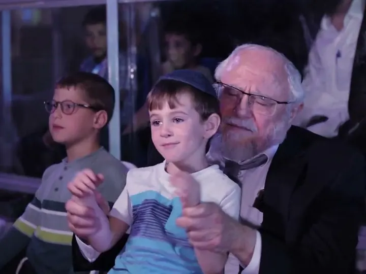

פרחי שמיים · מקהלת הילדים
שלוש אפשרויות לאתר פרחי שמיים
אותו עיצוב ואותם כללים, בשלוש רמות. פתחו כל הדגמה, נסו את מציאת החוג והטופס, ועברו בין עברית לאנגלית בכפתור שבראש העמוד.
-

מסלול 1
דף נחיתה
עמוד אחד מרשים שמציג את המקהלה, מוביל הורים לחוג ושולח פנייה ישירות למייל.
- פתיחה, חוגים ומציאת חוג
- פנייה שנפתחת במייל של ההורה
- מבחר שירים עם נגן
- אודות ומקהלולם
-
הכיוון המועדף

מסלול 2
אתר והרשמה לחוגים
אתר מלא שבו הורים משאירים פרטים בטופס, והצוות מנהל את הפניות בלוח ניהול פשוט.
- כל מה שבדף הנחיתה
- טופס פנייה ואישור אוטומטי במייל
- לוח ניהול: פניות, סטטוסים וייצוא לאקסל
- שירים מהפלייליסט, הופעות ומאחורי הקלעים
-

מסלול 3
אתר ועדכונים לרשומים
כל אתר החוגים, ובנוסף חשבון באתר ורשימת תפוצה לשירים, לחוגים ולהופעות.
- כל מה שבאתר החוגים
- הרשמה לחוג כוללת חשבון ועדכונים, בהסכמה
- הרשמה לעדכונים לקהל הרחב
- ניהול מנויים ושלוש תבניות דיוור
״היכל האור״ הוא בסיס להמחשה בלבד. העיצוב הסופי ייקבע אחרי המשוב. להצעת המחיר